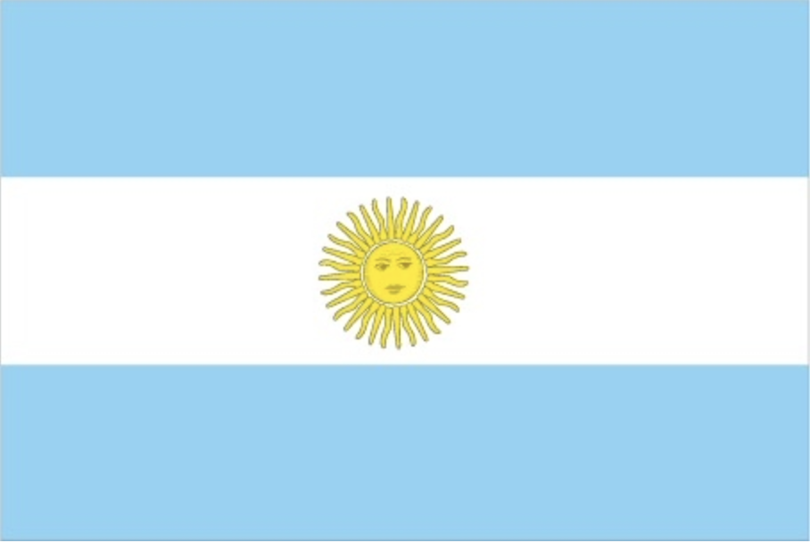

Bienvenidos en Argentina.
In 1816, the United Provinces of the Rio Plata declared their independence from Spain. After Bolivia, Paraguay, and Uruguay went their separate ways, the area that remained became Argentina. The country's population and culture were heavily shaped by immigrants from throughout Europe, with Italy and Spain providing the largest percentage of newcomers from 1860 to 1930. Up until about the mid-20th century, much of Argentina's history was dominated by periods of internal political unrest and conflict between civilian and military factions.
After World War II, an era of Peronist populism and direct and indirect military interference in subsequent governments was followed by a military junta that took power in 1976. Democracy returned in 1983 after a failed bid to seize the Falkland Islands (Islas Malvinas) by force, and has persisted despite numerous challenges, the most formidable of which was a severe economic crisis in 2001-02 that led to violent public protests and the successive resignations of several presidents. The years 2003-15 saw Peronist rule by Nestor and Cristina FERNANDEZ de KIRCHNER, whose policies isolated Argentina and caused economic stagnation. With the election of Mauricio MACRI in November 2015, Argentina began a period of reform and international reintegration.
three equal horizontal bands of sky blue (top), white, and sky blue; centered in the white band is a radiant yellow sun with a human face (delineated in brown) known as the Sun of May; the colors represent the clear skies and snow of the Andes; the sun symbol commemorates the appearance of the sun through cloudy skies on 25 May 1810 during the first mass demonstration in favor of independence; the sun features are those of Inti, the Inca god of the sun
Southern South America, bordering the South Atlantic Ocean, between Chile and Uruguay
34 00 S, 64 00 W
South America
total: 2,780,400 sq km
land: 2,736,690 sq km
water: 43,710 sq km
mostly temperate; arid in southeast; subantarctic in southwest
fertile plains of the pampas, lead, zinc, tin, copper, iron ore, manganese, petroleum, uranium, arable land
45,864,941 (July 2021 est.)
noun: Argentine(s)
adjective: Argentine
European (mostly Spanish and Italian descent) and Mestizo (mixed European and Amerindian ancestry) 97.2%, Amerindian 2.4%, African 0.4% (2010 est.)
Spanish (official), Italian, English, German, French, indigenous (Mapudungun, Quechua)
nominally Roman Catholic 92% (less than 20% practicing), Protestant 2%, Jewish 2%, other 4%
conventional long form: Argentine Republic
conventional short form: Argentina
local long form: Republica Argentina
local short form: Argentina
etymology: originally the area was referred to as Tierra Argentina, i.e., "Land beside the Silvery River" or "silvery land," which referred to the massive estuary in the east of the country, the Rio de la Plata (River of Silver); over time the name shortened to simply Argentina or "silvery"
presidential republic
name: Buenos Aires
geographic coordinates: 34 36 S, 58 22 W
time difference: UTC-3 (2 hours ahead of Washington, DC, during Standard Time)
etymology: the name translates as "fair winds" in Spanish and derives from the original designation of the settlement that would become the present-day city, "Santa Maria del Buen Aire" (Saint Mary of the Fair Winds)
civil law system based on West European legal systems; note - in mid-2015, Argentina adopted a new civil code, replacing the old one in force since 1871
Argentina benefits from rich natural resources, a highly literate population, an export-oriented agricultural sector, and a diversified industrial base. Although one of the world's wealthiest countries 100 years ago, Argentina suffered during most of the 20th century from recurring economic crises, persistent fiscal and current account deficits, high inflation, mounting external debt, and capital flight.
Cristina FERNANDEZ DE KIRCHNER succeeded her husband as president in late 2007, and in 2008 the rapid economic growth of previous years slowed sharply as government policies held back exports and the world economy fell into recession. In 2010 the economy rebounded strongly, but slowed in late 2011 even as the government continued to rely on expansionary fiscal and monetary policies, which kept inflation in the double digits.
In order to deal with these problems, the government expanded state intervention in the economy: it nationalized the oil company YPF from Spain's Repsol, expanded measures to restrict imports, and further tightened currency controls in an effort to bolster foreign reserves and stem capital flight. Between 2011 and 2013, Central Bank foreign reserves dropped $21.3 billion from a high of $52.7 billion. In July 2014, Argentina and China agreed on an $11 billion currency swap; the Argentine Central Bank has received the equivalent of $3.2 billion in Chinese yuan, which it counts as international reserves.
With the election of President Mauricio MACRI in November 2015, Argentina began a historic political and economic transformation, as his administration took steps to liberalize the Argentine economy, lifting capital controls, floating the peso, removing export controls on some commodities, cutting some energy subsidies, and reforming the country’s official statistics. Argentina negotiated debt payments with holdout bond creditors, continued working with the IMF to shore up its finances, and returned to international capital markets in April 2016.
In 2017, Argentina’s economy emerged from recession with GDP growth of nearly 3.0%. The government passed important pension, tax, and fiscal reforms. And after years of international isolation, Argentina took on several international leadership roles, including hosting the World Economic Forum on Latin America and the World Trade Organization Ministerial Conference, and is set to assume the presidency of the G-20 in 2018.
$447.467 billion (2019 est.)